Ege Baran Ay
Industrial Design · Communication Design · Sound

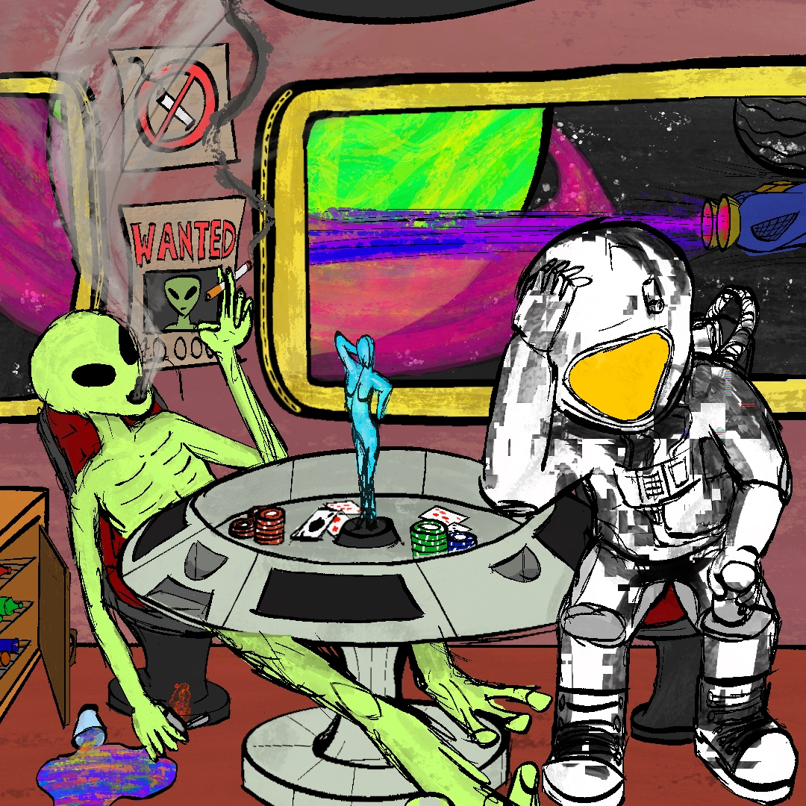
An astronaut arrives at a space casino — the noise fades, and the music expands into a spacey, cinematic soundscape.
▶ Open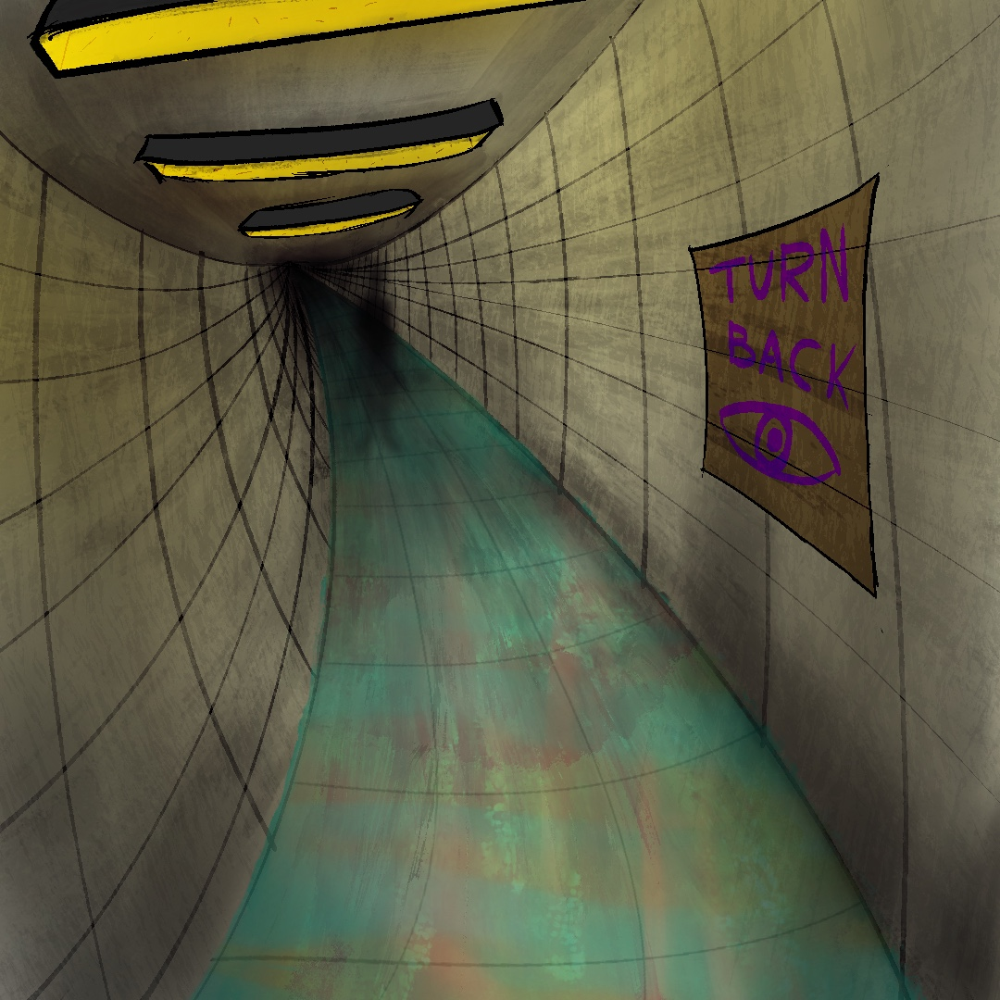
A liminal corridor, flooded with water — a dreamy soundscape that slowly darkens, then collapses into a girl humming in the dark.
▶ Open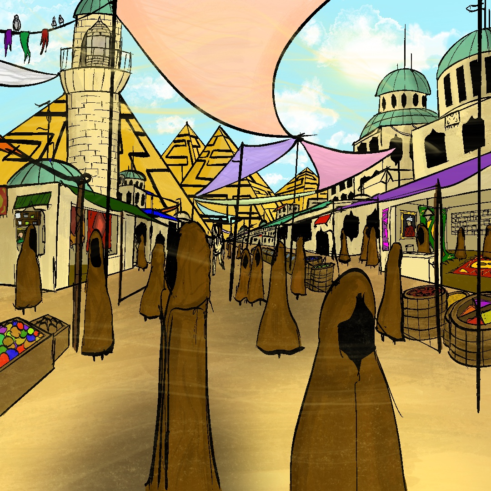
A busy oriental bazaar — crowd noise, street drummers, then a flute melody pulls you in as everything else falls away.
▶ Open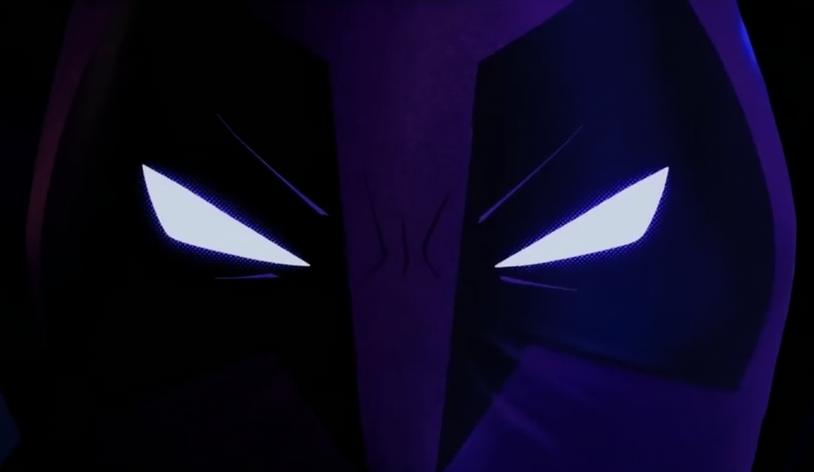
Sound redesign of the Prowler scene from Spider-Verse. Every sound rebuilt from scratch — foley, free samples, original composition.
▶ Open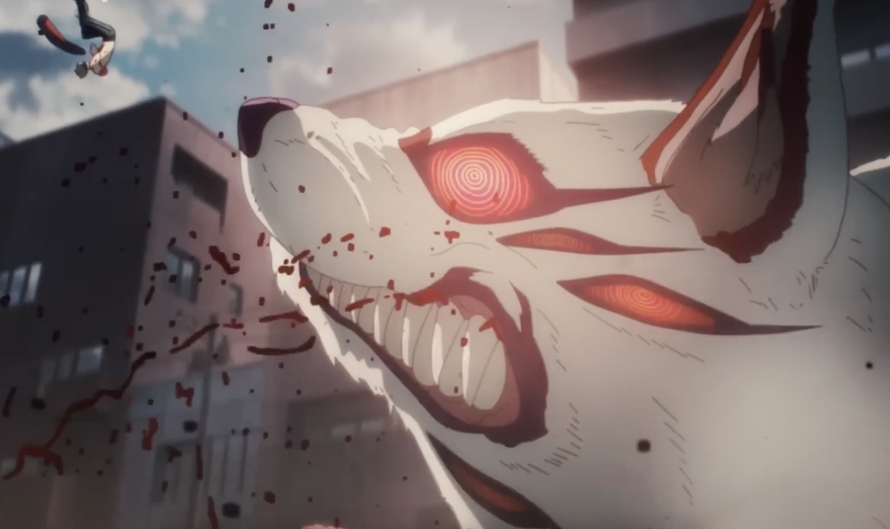
Sound redesign of a Chainsaw Man scene — heavy ambient, dubbed Leech Devil voice, then silence before a massive earthquake hit.
▶ Open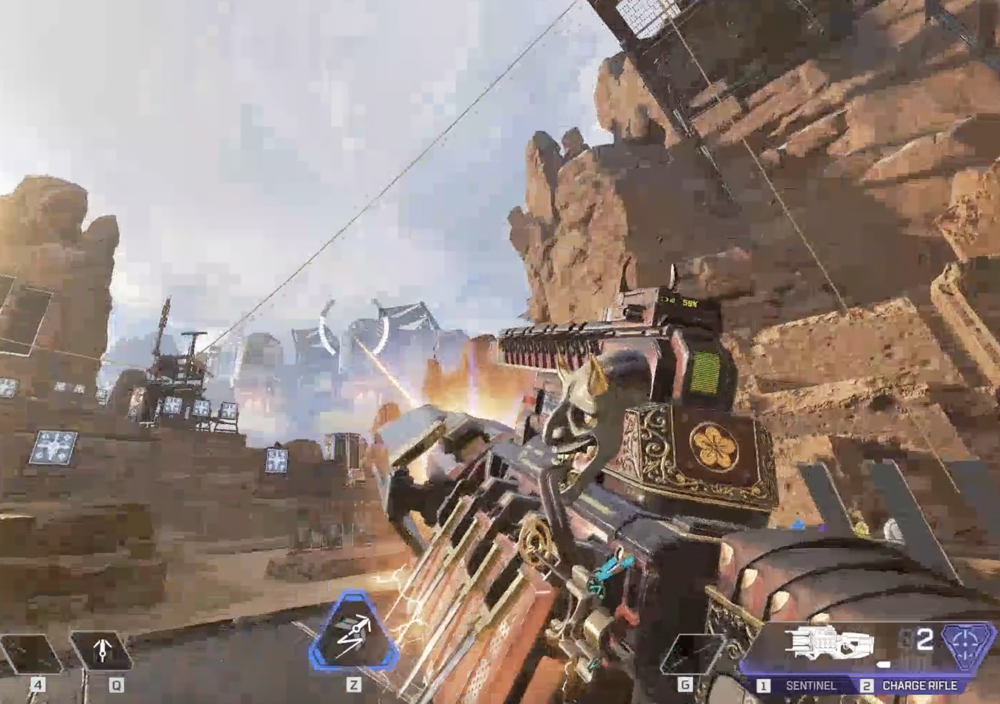
The Apex Legends Charge Rifle rebuilt from scratch — slow charge build, then the shot. Self-recorded foley and free samples.
▶ Open
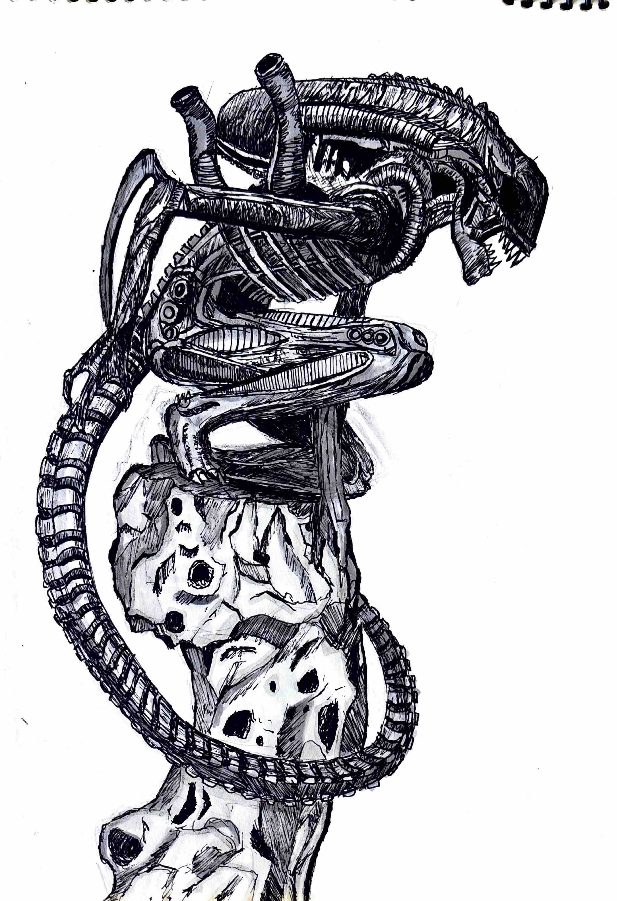
Ink pen and alcohol marker study of the Xenomorph from Alien — built with dense hatching and crosshatching entirely by hand.
View →{kind=link}
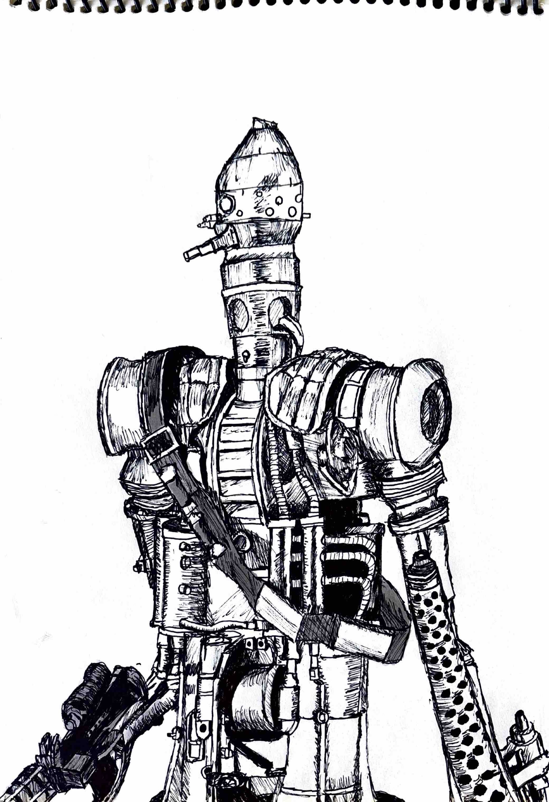
Ink pen and marker study of IG-88 from Star Wars — mechanical complexity, layered armor and weaponry built through hatching.
View →{kind=link}
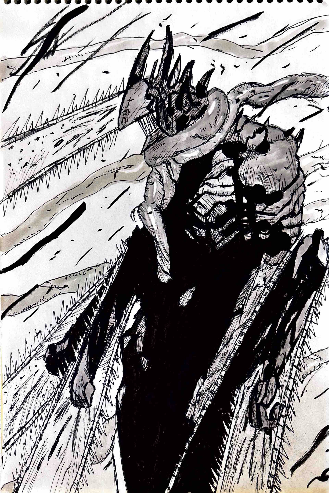
Manga panel recreation from Chainsaw Man — heavy black fills and frantic linework staying close to the raw energy of the original.
View →{kind=link}
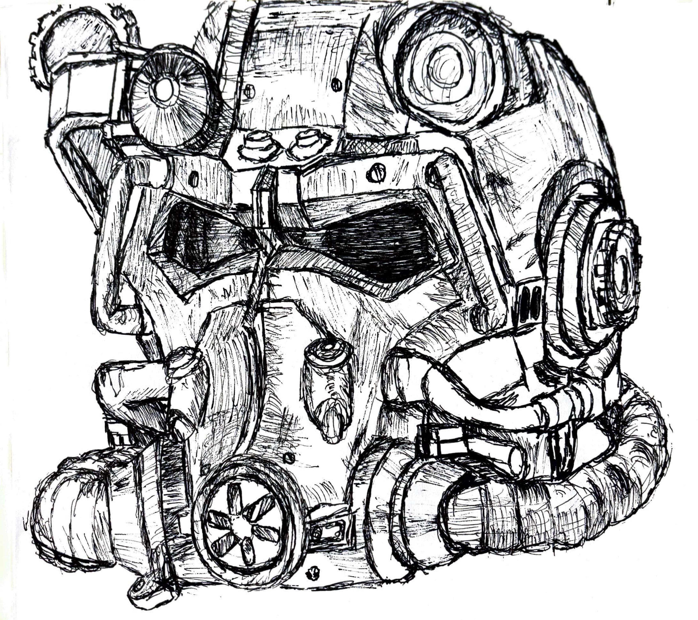
Ink pen study of the T-45 power armor helmet from Fallout — vents, lenses, panels captured through dense hatching by hand.
View →{kind=link}
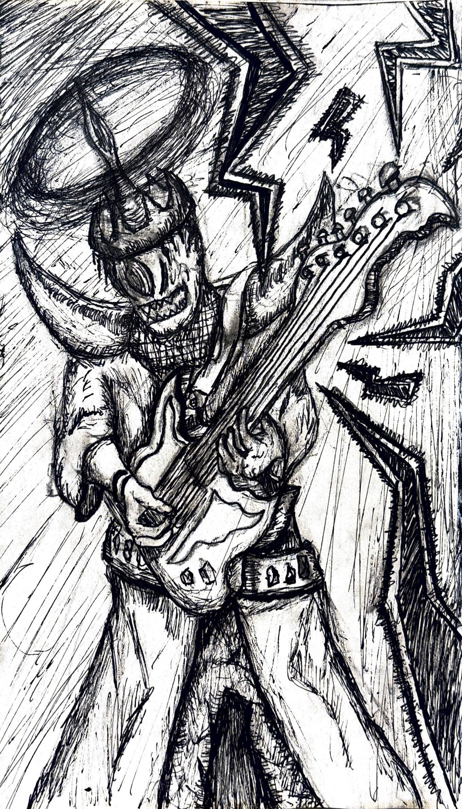
A stylishly dressed alien shredding on electric guitar, surrounded by lightning bolts — drawn in ink with energetic linework.
View →{kind=link}
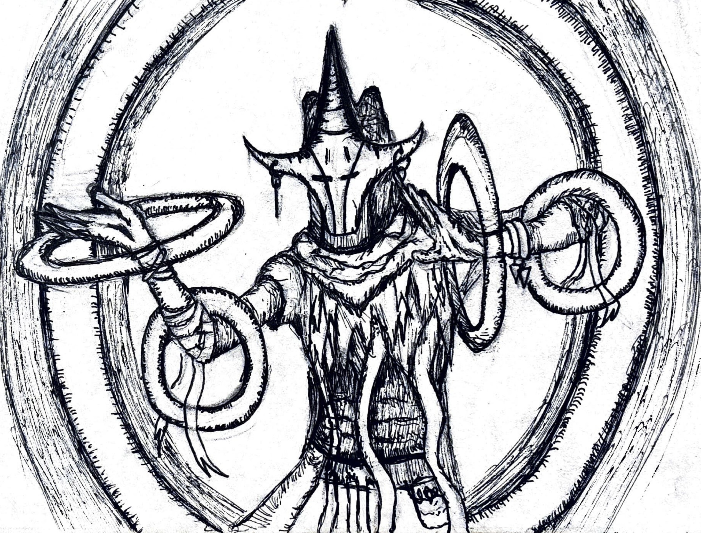
A shaman-like sorcerer standing within a large ring, manipulating energy rings with clawed hands — ink with detailed hatching.
View →{kind=link}


Best experienced on desktop